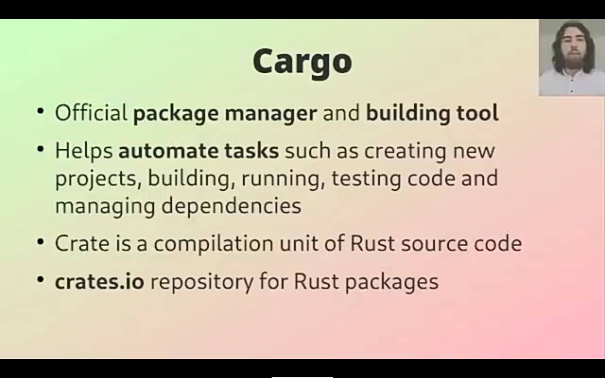
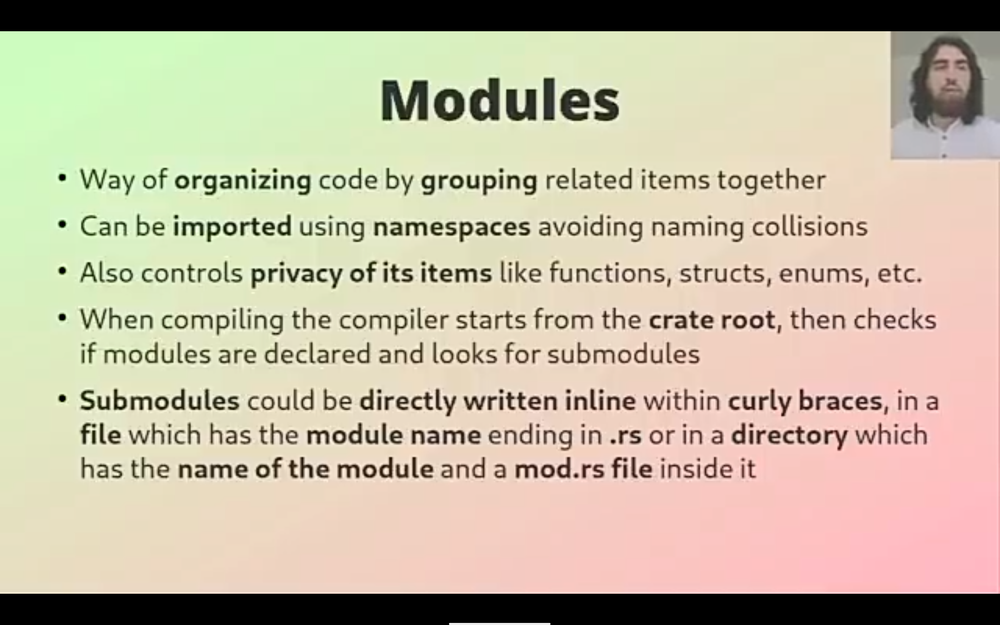
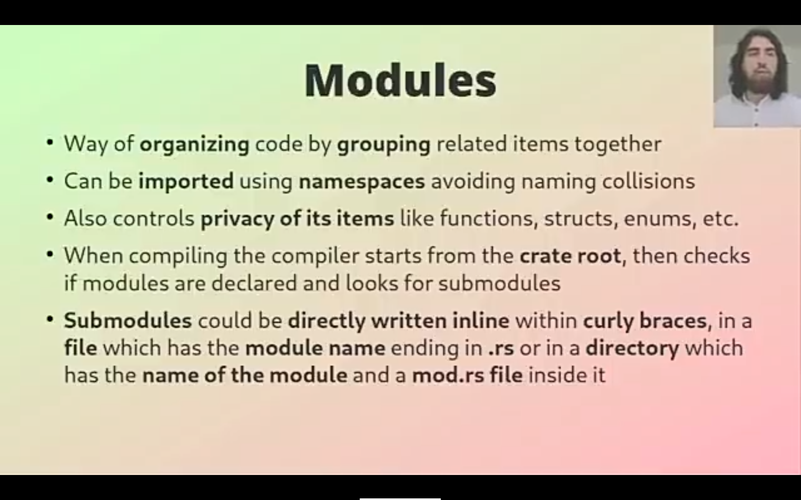
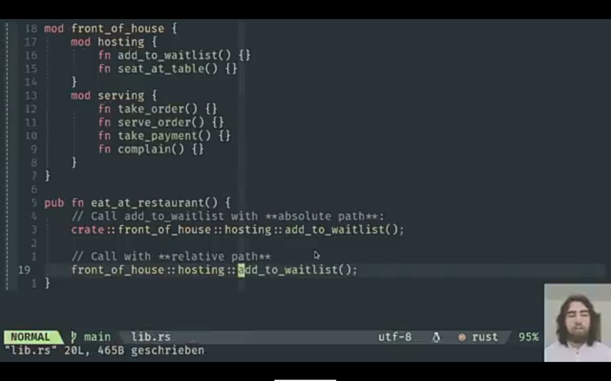
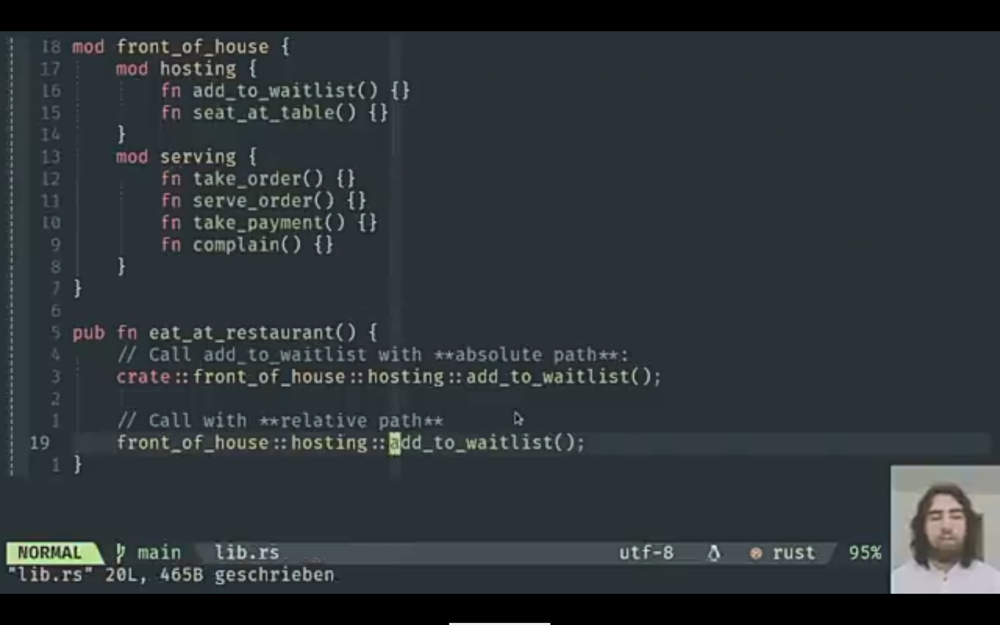
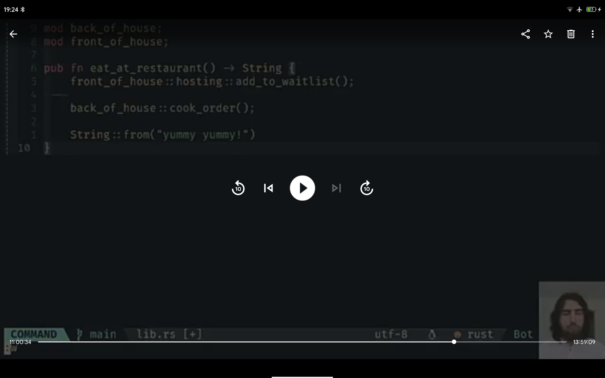
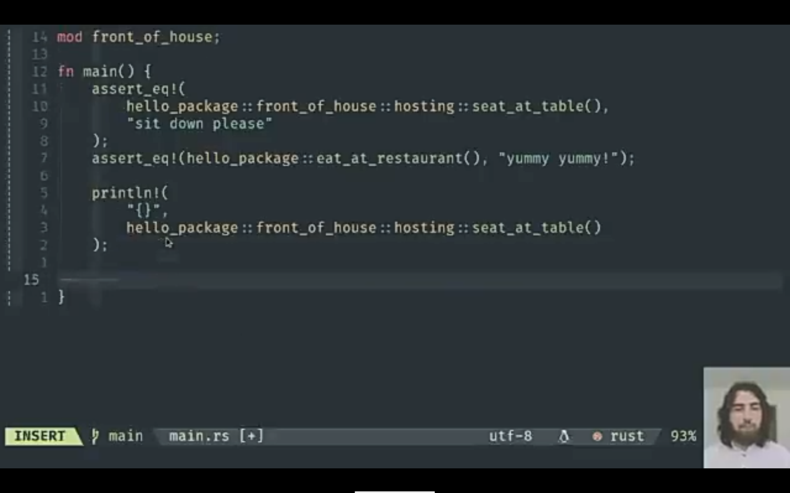
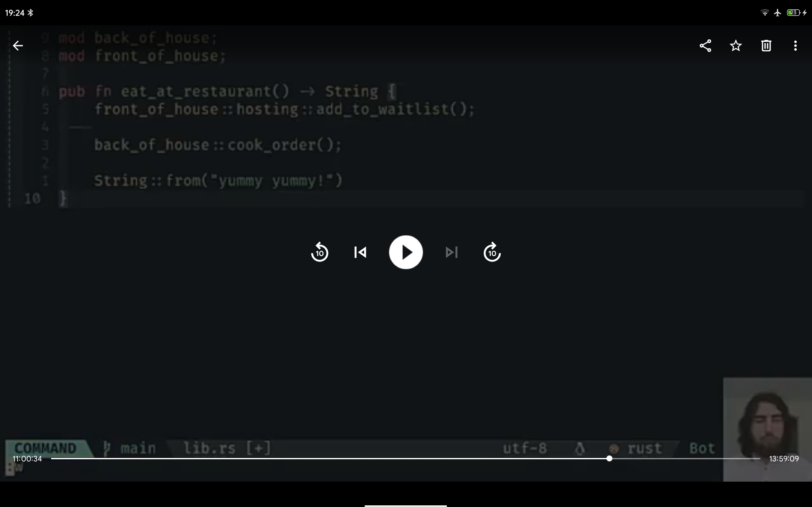
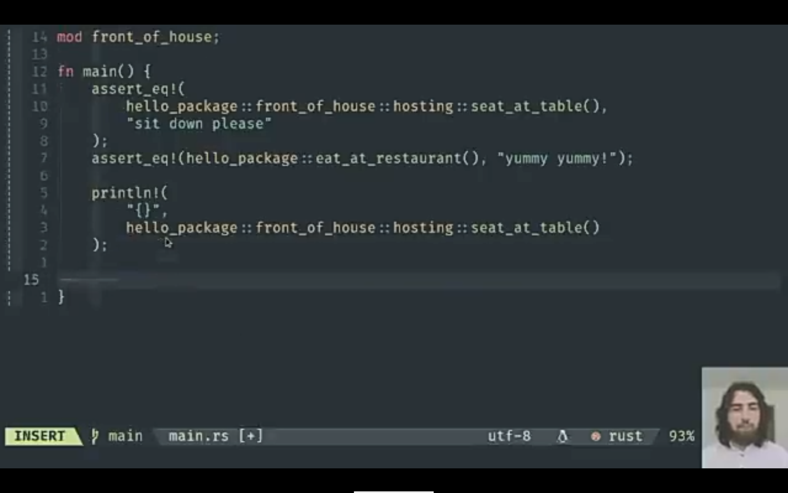

Rust — мультипарадигменный компилируемый язык программирования общего назначения, сочетающий парадигмы функционального и процедурного программирования с объектной системой, основанной на типажах.
Introduction
Cargo - система сборки и менеджер пакетов.
cargo new name_folder - создать проект name_folder
cargo build - создать исполняемій файл
cargo run - пересобирает исполняемый файл и запускает его
cargo check - проверяет, что код компелируется, но не создаёт исполняемый файл
cargo build -- release - создаёт исполнфемый файл с оптимизаией, собирает финальную версию.
Упорядочивание кода:
- группировка связанных функций
- разделение кода по основным функциональностям (фичам, feature).
Модульная система:
- Пакеты: функционал Cargo позволяющий собирать, тестировать и делиться крейтами.
- Крейты: дерево модулей, которое создаёт библиотечный или исполняемый файл.
- Модули и use: позволяют вместе контролировать организацию, область видимости и скрытие путей.
- Пути: способ именования элемента, такого как структура, функция или модуль.
Крейт - это наименьший объём кода, который компилятор Rust рассматривает за раз.
Бинарный крейт - обязательно содержит функцию main. Программа, которую можно скомпелировать в
исполняемый файл.
Библиотечный крейт - не имеет функции main и не компелируется в исполняемый файл. Определяет
функциональность для совместного использования другими проектами.
Корневой модуль крейта - исходный файл.
Пакет - набор из одного или нескольких крейтов, представляющий набор функциональности.
Пакет содержит файл Cargo.toml, в котором описывается как собирать эти крейты.
Пакет может содержать любое количество бинарных крейтов, но не более одного библиотечного крейта.
Пакет должен содержать хотябы один крейт, библиотечный или бинарный.
По умолчанию:
src/main.rs - это корневой модуль бинарного крейта
src/lib.rs - это корневой модуль библиотечного крейта
Cargo передаёт файлы корневого модуля крейта в rustc для сборки этого крейта.
Пакет может иметь несколько бинарных крейтов, помещая их файлы в каталог src/bin: каждый файл будет
отдельным бинарным крейтом, с тем же именем, что и пакет.
Несколько бинарных крейтов помещаются в src/bin.
Пакет включает в себя минимум один бинарный крейт, может содержать несколько бинарных и максимум один
библиотечный крейты.
Совокупность пакетов образуют рабочее пространство (workspace)
Правила:
- При компеляции компилятор сначала ищет корневой модуль крейта (src/lib.rs или src/main.rs)
- В файле корневого модуля крейта можно объявить новые модули; при объявлении mod garden
компилятор будет искать код модуля в местах:
- в этом же файле, между фигурных скобок, которые заменяют точку с запятой после mod garden
- в файле src/garden.rs
- в файле src/garden/mod.rs
- Если объявить модуль в файле, например объявить mod vegetables в src/garden.rs, то компилятор будет
искать код модуля в каталоге родительского модуля:
- в файле где объявили (garden.rs) сразу после mod vegetables, между фигурных скобок, которые
заменяют точку с запятой.
- в файле src/garden/vegetables.rs
- в файле src/garden/vegetables/mod.rs
- Обратиться к коду (к типу) можно используя путь: crate::garden::vegetables::Asparagus. Asparagus - это тип,
код которого в модуле vegetables.
- Чтобы сделать модуль общедоступным нужно добавить pub впереди объявления: pub mod.
Чтобы сделать элемент общедоступного модуля общедоступным нужно добавить pub перед его
объявлением.
- Ключевое слово use создаёт псевдоним для элемента для уменьшения длинных путей:
после use crate::garden::vegetables::Asparagus можно просто писать Asparagus.
Пример:
src/main.rs
use crate::garden::vegetables::Asparagus;
pub mod garden;
fn main () {
let plant = Asparagus {};
println! (“I’m growing {:?}!”, plant);
}
src/garden.rs
pub mod vegetables;
src/garden/vegetables.rs
#[derive(Debug)]
pub struct Asparagus {}
Код внутри модуля по умолчанию закрытый.
Создать библиотечный крейт restaurant:
cargo new restaurant --lib;
Получаем src/lib.rs.
Модуль размещается внутри фигурных скобок.
Модуль может находиться внутри другого модуля или в отдельном файле.
Файли src/main.rs и src/lib.rs называются корневыми модулями крейта. Содержимое любого из этих файлов
образует модуль с именем crate в корне структуры модулей дерево модулей.
Crate - родитель всего дерева (parent)
-A - A и B потомки crate (child)
-B - A и B братья (siblings)
Чтобы найти элемент в дереве модулей используем путь:
- абсолютный путь - это полный путь, начинающийся от корневого модуля крейта;
для кода из внешнего крейта абсолютный путьначинается с имени крейта, а для кода из текущего крейта
он начинается с литерала crate.
- относительный путь - начинается с текущего модуля и использует ключевые слова self, super или
идентификатор в текущем модуле.
Абсолютные и относительные пути состоят из одного или нескольких идентификаторов, разделённых двойными
двоеточиями(::).
Чтобы сделать функцию или структуру приватой нужно поместить её в модуль.
Дочерние модули оборачивают и скрывают детали своей реализации, но могут видеть контекст родителей, в
котором они определены.
Дерево модулей должно быть определено в src/lib.rs, тогда любые общедоступные элементы можно
использовать в бинарном крейте, начав пути с имени пакета.
С помощью ключевого слова super можно построить относительные пути, которые начинаются в родительском
модуле.
Rust не позволяет подключать оператором use два элемента с одинаковыми именами из разных родительских
модулей.
Идиоматические пути с use
use std::fmt;
use std::io;
fn function1 () -> fmt::Result {
//--snip--
}
fn function2 () -> io::Result {
//--snip--
}
С использованием ключевого слова as:
use std::fmt::Result;
use std::io::Result as IoResult;
fn function1 () -> Result {
//--snip--
}
fn function2 () -> IoResult <()> {
//--snip--
}
Реэкспорт pub use - подключаем элемент в область видимости и делаем этот элемент доступным для
подключения в других областях видимости.
Добавить внешний пакет rand:
в файл Cargo.toml написать rand = “0.8.3”
Код:
use rand::Rng;
fn main () {
let secret_number = rand::thread_rng().gen_range(1..=100);
}
Чтобы указать несколько элементов, определённых в одном крейте или в том же модуле используем вложенные
пути:
use std::cmp::Ordering;
или
use std::{cmp::Ordering, io};
use std::io;
use::io;
use::io::Write;
или
use std::io::{self, Write};
Лучше всего разделить функциональность, чтобы каждая функция отвечала за одну задачу.
main.rs занимается запуском программы, а lib.rs обрабатывает всю логику задачи.
Разделите код программы на два файла main.rs и lib.rs. Перенесите всю логику работы программы в
файл lib.rs.
Пока ваша логика синтаксического анализа командной строки мала, она может оставаться в файле
main.rs.
Когда логика синтаксического анализа командной строки становится сложной, извлеките её из main.rs и
переместите в lib.rs.
Функциональные обязанности, которые остаются в функции main после этого процесса должно быть
ограничено следующим:
Вызов логики разбора командной строки со значениями аргументов
Настройка любой другой конфигурации
Вызов функции run в lib.rs
Обработка ошибки, если run возвращает ошибку мы запустим программу с помощью > и именем файла
output.txt в который мы хотим перенаправить стандартный поток вывода.
$ cargo run > output.txt
Синтаксис > указывает оболочке записывать содержимое стандартного вывода в output.txt вместо
экрана.
Программирование в функциональном стиле зачастую предполагает использование функций в
качестве значений, которые передаются в качестве аргументов, возвращаются из других функций,
присваиваются переменным для последующего выполнения и так далее.
Cargo имеет два основных профиля: профиль dev, используемый Cargo при запуске cargo build, и
профиль release, используемый Cargo при запуске cargo build --release.
Добавляя секции [profile.*] для любого профиля, который вы хотите настроить, вы переопределяете
любое подмножество параметров по умолчанию.
В Rust также есть особый вид комментариев к документации, который обычно называется
комментарием к документации, который генерирует документацию HTML.
Комментарии к документации используют три слеша, /// вместо двух и поддерживают нотацию
Markdown для форматирования текста. Размещайте комментарии к документации непосредственно
перед элементом, который они документируют.
Мы можем сгенерировать документацию HTML из этого комментария к документации, запустив cargo
doc.
авторы библиотек обычно используют в своей документации:
Panics: Сценарии, в которых документированная функция может вызывать панику. Вызывающие
функцию, которые не хотят, чтобы их программы паниковали, должны убедиться, что они не вызывают
функцию в этих ситуациях.
Ошибки: Если функция возвращает Result, описание типов ошибок, которые могут произойти и какие
условия могут привести к тому, что эти ошибки могут быть возвращены, может быть полезным для
вызывающих, так что они могут написать код для обработки различных типов ошибок разными
способами.
Безопасность: Если функция является unsafe для вызова (мы обсуждаем безопасность в главе 19),
должен быть раздел, объясняющий, почему функция небезопасна и охватывающий инварианты,
которые функция ожидает от вызывающих сторон.
Добавление примеров кода в комментарии к документации может помочь продемонстрировать, как
использовать вашу библиотеку, и это даёт дополнительный бонус: запуск cargo test запустит примеры
кода в вашей документации как тесты!
Стиль комментариев к документам //! добавляет документацию к элементу, содержащему комментарии,
а не к элементам, следующим за комментариями.
По мере развития вашего проекта может возникнуть ситуация, когда библиотечный крейт будет
становиться все больше, и вы захотите разделить ваш пакет на несколько библиотечных крейтов.
Cargo предоставляет функциональность под названием workspaces, которая помогает управлять
несколькими взаимосвязанными пакетами, которые разрабатываются в тандеме.
Workspace - это набор пакетов, которые используют один и тот же Cargo.lock и директорию для
хранения результатов компиляции.
Команда cargo install позволяет локально устанавливать и использовать исполняемые крейты. Она не
предназначена для замены системных пакетов; она используется как удобный способ Rust
разработчикам устанавливать инструменты, которыми другие разработчики поделились на сайте
crates.io.
Если исполняемый файл доступен через переменную окружения $PATH и назван по шаблону
cargo-something, то его можно запускать как субкоманду Cargo cargo something. Пользовательские
команды подобные этой также перечисляются в списке доступных через cargo --list.
В большинстве современных операционных систем программный код выполняется в виде процесса,
причём операционная система способна управлять несколькими процессами сразу. Программа, в свою
очередь, может состоять из нескольких независимых частей, выполняемых одновременно.
Конструкция, благодаря которой эти независимые части выполняются, называется потоком. Например,
веб-сервер может иметь несколько потоков для того, чтобы он мог обрабатывать больше одного
запроса за раз.
Для обеспечения отправки многопоточных сообщений в стандартной библиотеке языка Rust
реализованы каналы.
Канал в программировании - это общепринятый механизм, с помощью которого
данные из одного потока отправляются другому потоку.
Канал считается закрытым , если либо передающая, либо принимающая его половина уничтожена.
Мы создаём новый канал, используя функцию mpsc::channel; mpsc означает несколько
производителей, один потребитель (multiple producer, single consumer).
, что несколько ручьёв втекают в одну большую реку: всё, что плывёт вниз по любому из ручьёв, в
конце концов окажется в одной реке.


 

 


 



Variable
Type
Function
Operator
Construction
Memory
Cycle
Error
Trait
Test
Unsafe Rust
| Syntax | Meta | |
|---|---|---|
| let | ключевое слово для объявления переменной | |
| {} | Scope - блок кода, в котором живёт объявленная переменная | |
| Shadowing | затенение - позволяет переобъявить переменную в том же блоке кода под тем же именем | |
| let x: i32; | объявление переменной х типа интежер 32-бита тип указывать желательно |
|
| ; | если есть ; то не возвращаем Statment: let x = 3; - ничего не вернём, т.к. есть ; - это Statment. Если есть = то это всегда statment. Expression: x += 1 - вернем значение 4, т.к. нет ; - это Expression |
|
| let x: i32 = 5; | инициализация переменной - присваиваем переменной значение значения, размер которых известен храняться в стэке, если размер не известен то в куче. |
|
| assert_eq!(x, 5); | assert - утверджать, equal - равенство. Макрос (!), который проверяет на равенство. | |
| println!("Success"): | Макрос (!), который выводит в стандартный вывод (терминал) то, что в "" и переводит курсор на новую строку | |
| format!("{}", x) | возвращает String | |
| let _y: i32; | _y означает неиспользуемая переменная | |
| #[allow(unused_variables)] | говорит компелатору позволить неиспользуемые переменные при такой записи имена переменных можно без _ |
|
| #[derive(Debug)] | говорит компилятору использовать анотацию "{:?}". dbg!(x) - выводит значение переменной х в режиме дебага | |
| #[derive(Display)] | говорит компилятору использовать анотацию "{}" | |
| let (x, y); | объявление сразу нескольких переменных let x; и let y; | |
| let mut x; | mut означает что значение переменной можно изменять | |
| x += 2; | короткая запись х = х + 2; | |
| let &x = y; | &x ссылка по имени х ссылается на у | |
| let &mut x = mut y; | изменяемая ссылка х ссылается на изменяемую переменную у | |
| let &<'a> x | <'a> время жизни ссылки & | |
| *x | Если х содержит ссылку &x, то * даёт нам значение по ссылке &x | |
| let t = (2, "hello", 6.4); | tuple - коллекция разнотипных значенией, доступ t.0, println!((только до 12 значений)); | |
| let (x, y) = (1, 2); | Деструктуризация tuple (1, 2) - х = 1, у = 2 | |
| let (x, y); (x, ..) = (3, 4); [.., y] = [1, 2]; |
Деструктуризация: х принимает значение 3, .. означает пропустить у принимает значение 2. [x, y] = [3, 2] |
|
| Integers: i32 Floats: f64 |
По умолчанию целое число i32, а число с плавающей точкой - f64 при операциях с f64 большая точность выявляет погрешность чисел, поэтому равенства могут на работать в таких случаях нужно использовать f32: 0.1 + 0.2 == 0.300000000000000001. |
|
| let x: u16 = 38_u8 as u16; | объявил переменную х типа u16 и присваиваю ей значение 38 типа u8 но т.к. присваивать можно значения только того же типа, то меняем тип as u16 |
|
| () | unit тип, который не имеет значения, размер 0 байт. let _v: () = (); представляет собой пустой tuple, возвращается когда функция ничего не возвращает. |
|
| bool | логический тип false и true, иметт размер 1 байт | |
| char | тип символа имеет размер 4 байта. обозначается одинарной кавычкой ''. | |
| String | тип строки - набор символов в виде вектора байт. обозначается двойной кавычкой "". let x = String::from("hello"); переменная x хранит ярлык с длиной, ёмкостью и указателем на адрес памяти в куче где хранится "hello" Методы приведения к типу String: String::from("hallo"); "hello".to_string(); s.replace("word1", "word2"); - заменяет word1 на word2 в строке s s.push_str("hello, world"); - когда добавляем в строку другую строку, s.push('!'); - когда добавляем в строку один символ s3: String = s1: String + s2.as_str(); - при конкатенации строк второе слагаемое должно быть &str. Метод s.clear() - делает строку пустой. |
|
| str | тип строкового литерала "hello", используется только по ссылке &str хранится в стэке и является представлением (фотографией на данный момет) строки типа String, которая храниться в куче. Т.е. при инициализации переменной типа &str мы идём в кучу делаем срез нужной строки и сохраняем его в стэке под именем инициализируемой переменной |
|
| \ | экранирование символов в стоке | |
| let row_str = r"\x3F"; | в row строке экранирование не работает, конвертации в символ не будет | |
| let s = &s1[0..1]; | доступ к символам в строке s только через срез. В срезе указываетс диапозон байт строки в котором находится нужный символ | |
| = | Присваивание. Значение, которое имеет фиксированный размер живёт в стеке и принадлежит переменной. значение, которое может изменяться живёт в куче, на его адрес в куче указывает переменная, в которй хранится указатель, длина значения и количество памяти зарезервированное под это значение. При присваивании значения переменной из стэка другой переменной происходит копирование значения. При присваивании значения переменной из кучи другой переменной происходит перемещение указателя, длины и количества памяти из старой переменной в новую. Старая переменная уничтожается. let new_var = old_var.clone(); - копия значения в куче и указатель на копию в новой переменной |
|
| :: | обращение к ассоциированной функции String::from("hello"); ассоциированная - это функция без аргумента self |
|
| . | обращение к методу "hello".to_string(); метод - это функция первый аргумент которой self |
|
| 0xff | 16-ти ричное значение 255 | |
| 0o77 | 8-ти ричное значение 63 | |
| 0b1111_1111 | бинарное (0 и 1) значение 255 | |
| for i in 'a'..='z' { println!("{}", i);} |
for _ in _ {} - цикл. 'a'..='z' - диапозон от..до. если есть =, значит включительно. "{}", i - вставить в стоку значение i |
|
| for c in "hello".chars() { println!("{}", c) } |
Метод chars() переведёт символы строки в итератор (в последовательность для итерирования). Цикл for пройдёт по всей последовательности и выведет каждый символ на печать |
|
| Function | именованный блок кода, который используется несколько раз | |
| fn name(x: i32, y: i32) -> i32 { x + y } |
fn - ключевое слово для объявления функции; name(x: i32, y: i32) - имя функции с параметрами х и у, анотация типа параметра обязательна; если в параметр передается переменная, которая указывает на значение в куче, то эта переменная перемещается из своей области видимости в область видимости функции. если в параметр передается переменная со значением в стэке, то переменная остается в своей области видимости, а в область видимости функции передается её копия. -> i32 - возвращает значение типа i32, обязательно указывать если функция что-нибудь возвращает; {} - scope, блок кода, область видимости функции; x + y - выражение, результат которого возвращает функция |
|
| fn never_return() -> ! { panic!() } |
функция, которая никогда не вернет поток. Макрос panic!() вызовет ошибку и завершение программы. unimplemented!() - макрос для функций, которые пока ещё не имплементированы. todo!() - |
|
| Option<.i32> | Some() None | |
| Result<.Res, Err> | Ok() Err() | |
| match x { 1 => { } _ => { } } |
||
| let x: Box<.i32> = Box::new(5); | Box позволяет разместить любое значение в куче. | |
| let s: Box<.str> = "hello, world".into(); | Метод into() переводит значение, на которои его вызвали в указанный тип переменной. | |
| struct Person { name: String, age: Box<.u8>, } |
создаёт сруктуру с полями. Так создаются новые пользовательские типы. | |
| let person: Person = struct Person { name: String::from("Alice"), age: Box::new(20), }; |
инициализируем сруктуру с конкретными значенями. Переменная person имеет тип Person. | |
| let Person {name, age} = person; | деструктуризируем переменную. Получаем переменные name и age с указателями на значения. | |
| let arr = []; | let arr: [i32, 3] = [1, 2, 3]; let arr: [i32, 10] = [1; 10]; // [1, 1, 1, 1, 1, 1, 1, 1, 1, 1] arr[0], arr.get(0).unwrap(); get(0) - возвращает Option<.T> |
1. rust + bash + SQL
2. свои программы (2Д игра - не ютуб видео с обучением переписываем на rust)
3. Фреймворки (Работать программистом).
4. Оценка сложности алгоритмов big O
5. Базовые структуры данных:
- массивы
- связные списки
- хэш-таблицы
- стэк
- очередь
реализовать с нуля самостоятельно (поиск, вставка, удаление элемента)
6. Системы счисления
- шестнадцатиричные
- двоичные
7. Архитектура компьютэра
- модульность памяти
- сборщики мусора
- разрядность процессора
- регистры процессора
8. Битовые операции
9. Числа с плавающей точкой
10. Строки
- ASCII
- UNICODE
- Кодировки
11. Язык Ассемблера (понимание как работает программа, ОС, вирус)
12. Стек (программный)
- передача параметров функции
- кадры функции
- возврат функции
13. Рекурсия (взаимодействие со стеком)
14. Сортировки (разобрать базовые алгоритмы сортировок:
- пузырьком
- вставками
- кучей
- Хоара
- Ламуто
- т.д.)
15. Поиск (деревья и графы)
- бинарное дерево поиска с реализацией вставки, поиска и удаления узлов
- вэйл дерево
- красночерное дерево
- поиск в глубину и ширину графы
16. Интернет
- OSI
- TCP/IP
17. Операционные системы
- организация памяти
- процессы
- поток
18. Файловая система
- FAT 32
- NTFS
- EXT 4
19. Исполняемые файлы
- PE
- ELF
20. Сжатие
- изображение
- звук
- видео
21. Криптография
- HTTPS
- SSH
- RSA
22. 3Д графика
- шейдеры
- освещение объектов
- реализации камеры
23. Компиляторы
- Лексический анализ
- Синтаксический анализ
- Симантический анализ
- AST
- Генерация машинного кода
24. Математика и алгоритмы
- книги кнута и корбана
Свой путь